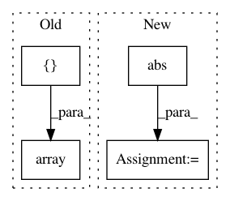

ba54a88068c07af00b4cb26362788ee51af319be,flow/envs/lane_changing.py,SimpleLaneChangingAccelerationEnvironment,action_space,#SimpleLaneChangingAccelerationEnvironment#,20
Before Change
max_acc = self.env_params.get_additional_param("max-acc")
lb = [-abs(max_deacc), -1] * self.vehicles.num_rl_vehicles
ub = [max_acc, 1] * self.vehicles.num_rl_vehicles
return Box(np.array(lb), np.array(ub))
@property
def observation_space(self):
After Change
lateral direction the vehicle will take.
acc_action_space = Box(
low=-abs(self.env_params.additional_params["max-deacc"]),
high=self.env_params.additional_params["max-acc"],
shape=(self.vehicles.num_rl_vehicles,))
action_space = Tuple(
tuple([Discrete(3) for _ in range(self.vehicles.num_rl_vehicles)]) +
tuple([acc_action_space])
)
return action_space
// max_deacc = self.env_params.get_additional_param("max-deacc")
In pattern: SUPERPATTERN
Frequency: 3
Non-data size: 4
Instances
Project Name: flow-project/flow
Commit Name: ba54a88068c07af00b4cb26362788ee51af319be
Time: 2017-10-12
Author: akreidieh@gmail.com
File Name: flow/envs/lane_changing.py
Class Name: SimpleLaneChangingAccelerationEnvironment
Method Name: action_space
Project Name: statsmodels/statsmodels
Commit Name: 1bb7f603f00783801b57d114c0eeea0c55950174
Time: 2020-08-25
Author: ezequiels.90@gmail.com
File Name: statsmodels/robust/scale.py
Class Name:
Method Name: _qn_naive
Project Name: rail-berkeley/softlearning
Commit Name: 0cef3e36b3283534bc0395d167e4e2a63c5ff9e2
Time: 2018-07-25
Author: kristian.hartikainen@gmail.com
File Name: softlearning/environments/image_pusher.py
Class Name: ImageForkReacherEnv
Method Name: reset